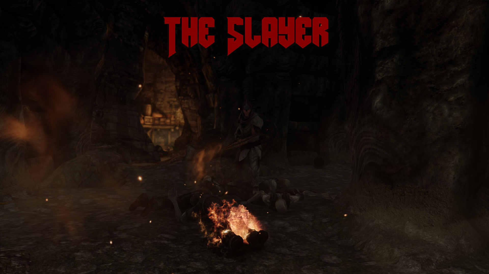
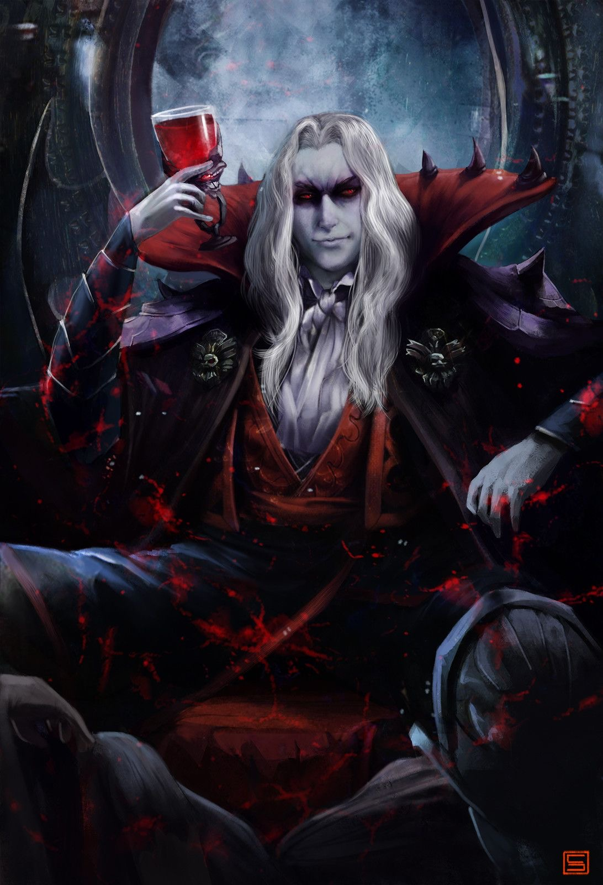

Posted by Shadon on October 5, 2020 at 12:01am
The nightmares plaguing this land--the undead, the vampires, the Daedra--they are rage. Brutal, without mercy. But he... he is worse. He alone can stand before the horde. His rage is their terror, and his might... their DOOM...
***
The concept for this build arose with the release of DOOM Eternal, which really got me itching to see how I could incorporate the DOOM Slayer's signature speed, ferocity, and weapon mastery into Skyrim. The resulting build is my little twist on the combat archer archetype, providing a fast-paced and brutal combat experience at all ranges. Get ready to rip and tear as you become...

This build makes use of a couple of common mods to enhance the gameplay experience to truly demonic proportions.
Posted by NomadDash on October 28, 2019 at 6:45pm
In the deepest, darkest valley in High Rock, there lies an ancient, crumbling castle, standing proud in all of it's unholy glory. It looms over the surrounding area and smothers the light with unease. Legends say it holds all kind of wretched abominations, flesh monsters and legions of the damned. Legends say one of the damned rule them all. For as long as anyone can remember, the ancient Belmont bloodline of vampire hunters have sent thir young and brave to slay these filthy beasts. Every time they march proudly into that ruin, heads held high with rightous confidence. Every time, they never return.
Now, terrifying news of a plague of ancient vampires in Skyrim have reached the commoners of this god forsaken valley, and they have reached the ear of the king of the damned himself. Whether through kinship, pride or respect, the Lord had decided to extend his hand to his ancient brethren personally, and bring Bal's chosen together, so they may feast and rule in eternity.
The castle now lies empty, and the brief hope and celebration felt by the commoners has been replaced with hushed whispers and a deep sense of impending dread.

The main idea/inspiration for this build is Dracula from the original Castlevania, and molds it's playsyle around his bossfight/general theme. What we have as a result is a master of evasion, an elusive caster who teleports around the battlefield, vanishing into mist all the while sending demons to harass their enemies or peppering them with fireballs from a hidden position.
| Title of Blog 1 | Title of Blog 2 |
|---|---|
| The Slayer | Lord of Shadows |
| Extra Data 1 | Extra Data 2 |